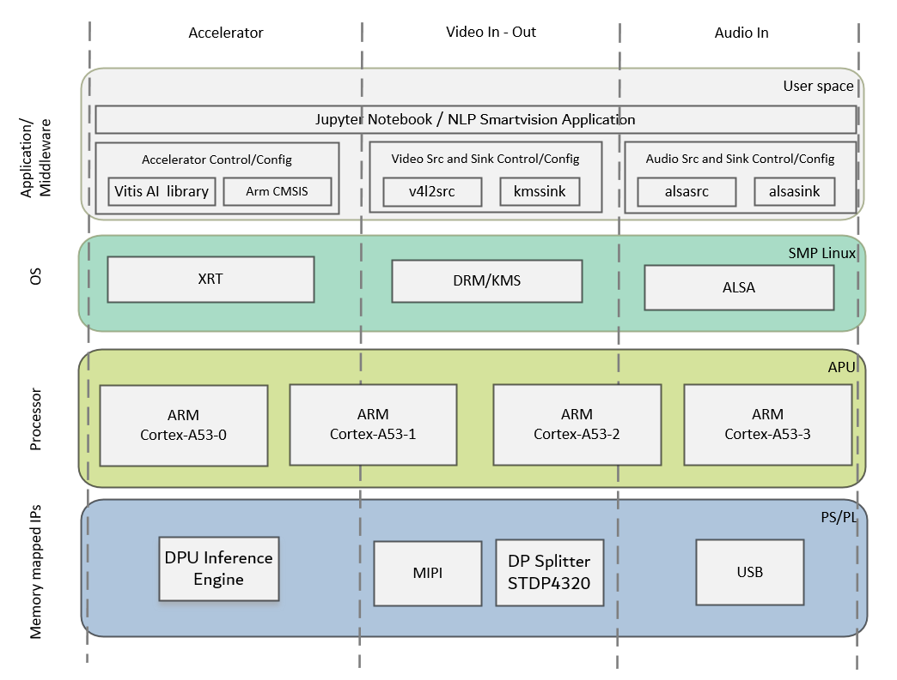

Kria™ KV260 Vision AI Starter Kit NLP Smart Vision Tutorial |
Design Overview |
Design Overview¶
Introduction¶
The NLP SmartVision design built on KV260 Vision AI Starter Kit provides a framework for building and customizing audio & video platforms that consist of four pipeline stages:
Capture pipeline
Audio processing pipeline
Video processing pipeline
Output pipeline
The design has a platform and integrated accelerator functions. The platform consists of Capture pipeline, Output pipeline and some video processing functions. This approach makes the design leaner and provides a user maximum Programmable Logic (PL) for the accelerator development. The platform supports audio capture from a USB microphone and video capture from MIPI single sensor device. The output can be displayed on a monitor via Display Port or HDMI.
The application continuously captures and process the audio data for performing the Keyword Spotting (KWS) task. As the name suggests, job of KWS is to process the audio data and detect (spot) the spoken keyword. Keyword detected is from a pre-defined set of keywords for which the model was trained. The KWS model used for NLP SmartVision is Hello Edge, which was trained on 1 second audio files of 10 keywords (Yes, No, Off, On, Up, Down, Left, Right, Stop, Go) from the open sourced Google Command Dataset.
For the vision tasks the following example acceleration functions can be run on this platform using programmable Deep Learning Processor Units (DPU)
Face Detection - Network model: cf_densebox_wider_360_640_1.11G_1.2
Object Detection - Network model: dk_yolov2_voc_448_448_0.77_7.82G_1.2
Number Plate Detection - Network model: cf_plate-detection_320_320_0.49G_1
The following figure shows the various pipelines supported by the design.
The application processing unit (APU) in the Processing Sytem (PS) consists of four Arm® Cortex®-A53 cores and is configured to run in symmetric multi-processing (SMP) Linux mode in the design. The application running on Linux is responsible for configuring and controlling the audio/video pipelines and accelerators using Jupyter notebooks or the application. The following figure shows the software state after the boot process has completed and the individual applications have been started on the APU. Details are described in the Software Architecture document.

The APU application controls the following data paths implemented in a combination of the PS and PL:
ALSA based live continuous audio data capture using USB interface controlled by the PS and writing audio frames into DDR memory.
Capture pipeline capturing video frames into DDR memory from an image sensor connected via MIPI CSI-2 Rx through the PL.
Memory-to-memory (M2M) pipeline
Audio M2M Pipeline implements the KWS inference application. Audio frames are read from DDR and processed by the Hello Edge model running on PS. The detected keyword is then passed as an argument to the post-processing block and a corresponding pre-defined action is performed on the output video frame.
Video M2M Pipeline implements a typical Neural Network Inference Application. In this design the Neural Net is implemented in DPU, video frames are read from DDR memory, processed by the DPU, and then written back to memory.
An output pipeline reads post-processed video frames from memory and sends the frames to a sink.
In the display pipeline sink is a monitor. DP controller subsystem in the PS is coupled to STDP4320 de-multiplexer on the carrier card. STDP4320 consists of dual mode output ports configured as DP and HDMI.
The following figure shows an example end-to-end pipeline which could be a USB microphone as an audio source and a single image sensor as the video source. Audio source writes to DDR, followed by Voice Activity Detection (VAD) and Keyword Spotting Inference. Task of VAD is to keep monitoring the input audio data and whenever there is an activity (increase in input energies w.r.to audio input) create a 1 second audio frame and pass it to KWS for inference. Similarly video capture is followed by pre-process and DPU IPs for application NN Inference. The inferred keyword and vision task are post processed and output video frames are displayed via DP splitter onto a DP display, as the video sink. The figure also shows the image preprocessing and postprocessing block in the capture and acceleration path. The preprocessing block scales down the video whereas the postprocessing block does several actions based on spoken audio command. The video format in the figure is the output format on each block. Details are described in the Hardware Architecture document.
Design Components¶
Hardware components
KV260 Vision AI Starter Kit including
USB Microphone
USB Camera
On Semi AP1302 Image Signal Processor (https://www.onsemi.com/products/sensors/image-sensors-processors/image-processors/ap1302) on the carrier card
HDMI-DP splitter on the carrier card
On Semi AR1335 CMOS Image sensor (https://www.onsemi.com/products/sensors/image-sensors-processors/image-sensors/ar1335)
Raspberry pi camera module https://www.raspberrypi.com/products/camera-module-v2/
Interfaces and IP
Audio inputs
USB Microphone
Audio processing
Customized ALSA based audio capture and audio packets preparation.
Audio pre-processing for voice activity detection (VAD) on PS
PS based accelaration of KWS using a subset of ARM CMSIS library (ARM-DSP and ARM-NN).
Video inputs
MIPI CSI-2 Rx
Video outputs
DisplayPort
HDMI
Video processing
Accelerator functions on DPU
Xilinx ISP
PS based pre and post processing specific to a accelerator function
Auxiliary Peripherals
QSPI
SD
I2C
UART
Ethernet
General purpose I/O (GPIO)
Software components
Operating system
APU: SMP Linux
Linux kernel subsystems
Video source: Video4 Linux (V4L2)
Audio source: ALSA
Display: Direct Rendering Manager (DRM)/Kernel Mode Setting (KMS)
Linux user space frameworks
Jupyter
GStreamer
OpenCV
Xilinx run-time (XRT)
Resolution and Format Supported
Resolutions
1024x768 @30FPS
Pixel format
YUV 4:2:2 (NV16)
Audio Data
Sampling Rate : 16kHz
Number of channels: 1 (mono)
Supported format: S16_LE (PCM signed 16-bit little-endian)
Next Steps¶
The user can choose any of the following next steps:
References¶
For more information refer to the documents below
Kria KV260 Vision AI Starter Kit User Guide (UG1089)
Kria SOM Carrier Card Design Guide (UG1091)
Kria KV260 Vision AI Starter Kit Data Sheet(DS986)
Kria K26 SOM Data Sheet(DS987)
License¶
Licensed under the Apache License, Version 2.0 (the “License”); you may not use this file except in compliance with the License.
You may obtain a copy of the License at http://www.apache.org/licenses/LICENSE-2.0
Unless required by applicable law or agreed to in writing, software distributed under the License is distributed on an “AS IS” BASIS, WITHOUT WARRANTIES OR CONDITIONS OF ANY KIND, either express or implied. See the License for the specific language governing permissions and limitations under the License.
Copyright© 2021 Xilinx